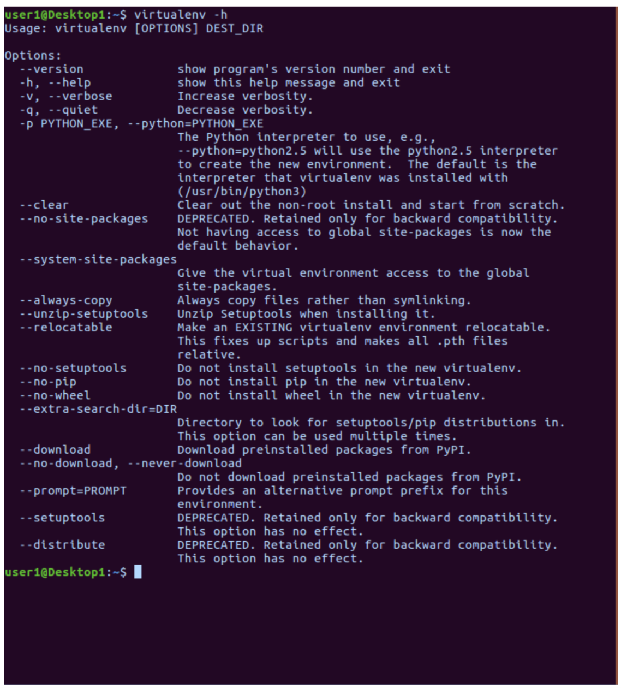

Environment Setup
We'll use these tools in setting up the development environment. The tools include:
Python 3: A interpreter for Python 3 code
Git: A file versioning program that provides a bash command line interface when working on Windows
Visual Studio Code: An interactive development environment
Python 3
For Python 3 on Windows 7 install use this link to walk you through the install: https://docs.python-guide.org/starting/install3/win/. The link describes how you will install first install Chocolatey which is a Windows 7 package manager and then use it to install Python3 and will make it possible for your to install Python. Follow the Chocolatey instuctions here: https://docs.python-guide.org/starting/install3/win. Once Python is installed, you'll install pip, which is the Python package manager.
Install Virtualenv and Setup First Environment
In Windows use an elevated prompt (run as admin) run the following command to install virtualenv.
pip install virtualenv
Easy as that. You've just installed the virtualenv tool. I'd strongly encourage you to inspect the help information for the tool to learn more about how it works. To do so, in your terminal type:
virtualenv -h
You'll have information that looks something like this:
To test your installation:
Now that you have that installed, we'll set up a project directory, navigate into that directory and create our virtual environment folder.
First, navigate into your home directory:
cd %HOMEPATH%
Then create a directory for your project and navigate into it.
mkdir my_project
cd my_project
virtualenv -p [path to python executable] my_env
Follow the link to installing pipenv to set up a python environment manager for more information: https://docs.python-guide.org/dev/virtualenvs/#virtualenvironments-ref.
Download and Install Git
This will install a Folder with a number of file and programs.
Open a bash window ( 'git bash' on Windows) and type in
git --version
This should return a confirmation that git is installed with a version number.
Visual Studio Code
Download and install VS Code using the link below.
https://code.visualstudio.com/
User Settings
VS Code allows you to customize settings for all projects (User Settings) or for a single project (Workspace settings). To modify default settings select Code | Preferences for the Mac or File | Preferences for Windows and then Settings. You will see 2 files side by side. On the left are the default settings and on the right are the User setting overrides.
To change a default setting find the setting on the left and then copy it to the right with your desired setting. For example, if you don't want to see the minimap on the right hand side of the application, you can make the following entry in the file on the right. Notice that options are key : value pairs and that they are commas separated.
{
"editor.minimap.enabled":false
}
Make "Git Bash" the default command line in VS Code terminal by adding the following to your User Settings:
"terminal.integrated.shell.windows": "C:\\Program Files\\Git\\bin\\bash.exe"
Add a Python Plugin
You can add a plugin by clicking on the lowest left icon and then search for and installing a plugin. Install the "Python" extension by search for "Python" and then selecting and installing. This plug helps with code formatting.
repl.it
There is no installation needed for repl.it as it is a cloud application. This is a place to create and run python scripts. It's also a good place to store them and it's free to join. Navigate here on your browser: https://repl.it/. Each student can create their own account on repl.it and use it to upload scripts created in class. Code loaded on repl.it will be available for sharing on the web.